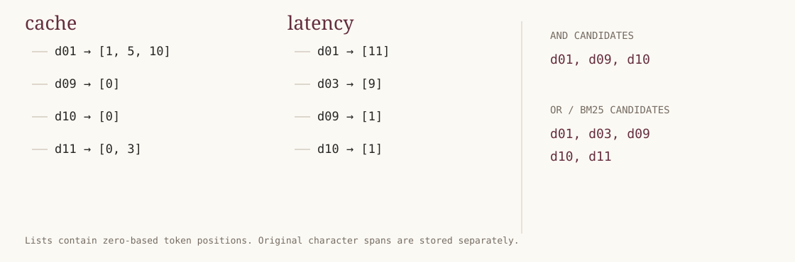

Positional search index
A source-built inverted index with exact normalized-token queries, overlapping phrase matches and per-term ranking explanations.
The index stores token positions and half-open spans in the original text. Normalization can change a token's length; the highlighted characters always come from the original document.
Recorded query results
Select a saved Python query. The browser displays its actual result order, original-text highlights and explanations; it does not run a second search implementation.
Posting lists and phrase positions
AND intersects document sets; OR and BM25 use their union. Phrase queries first intersect the term document sets, then test adjacent token positions. These postings are drawn from the saved index.

Overlapping phrase: “echo echo”
Occurrence one: positions [0,1], original characters [0,9).
Occurrence two: positions [1,2], original characters [5,14).
The result preserves both occurrences. Display highlights merge their overlap into [0,14), so the shared middle word is marked once. Punctuation is a delimiter, so the phrase “search engine” also matches search-engine and search, engine.
BM25 score explanation
For “cache latency,” the two identical short documents d09 and d10 receive exactly equal scores. Their document IDs break the tie. Repeating “cache” in the query produces the same ranking because query terms are deduplicated.
score = Σ IDF(t) · tf(k₁ + 1) /
[tf + k₁(1 − b + b · dl / avgdl)]
Top document d09: “cache latency”
| TERM | TF | DF | IDF | TF SATURATION | CONTRIBUTION |
|---|---|---|---|---|---|
| cache | 1 | 4 | 1.060872 | 1.525547 | 1.618411 |
| latency | 1 | 4 | 1.060872 | 1.525547 | 1.618411 |
Full-precision score: 3.2368210187331368. Displayed components are rounded; saved JSON retains every value.
The positive IDF form also appears in Lucene's BM25 documentation. This study does not reproduce Lucene's field statistics, encoded norms or complete scoring implementation. The probabilistic framework is described by Robertson and Zaragoza.
Original spans after normalization
Token boundaries are found in the original string before NFC normalization, case folding and a final NFC pass. Each match keeps the original code-point span, even if its normalized text expands or composes.
| ORIGINAL TEXT | QUERY | ORIGINAL SPAN | ORIGINAL CODE POINTS |
|---|---|---|---|
| Straße | strasse | [0, 6) | 6 |
| STRASSE | strasse | [11, 18) | 7 |
| ffi | ffi | [59, 60) | 1 |
| Ångström units | ångström units | [70, 86) | 16 |
| ΟΣ | οσ | [116, 118) | 2 |
| ος | οσ | [123, 125) | 2 |
Straße occupies six original code points but normalizes to seven in strasse. The single ligature ffi normalizes to three letters. A decomposed Ångström still highlights the combining marks in the original text.
Validation and reproduction
256-document comparison
A separate seeded corpus contains 84,484 original code points and 13,791 tokens. All ten fixed queries reconcile exact document order, token positions and original spans against an independent scanner; BM25 scores agree within 10⁻¹² relative and absolute tolerance.
| QUERY | MODE | HITS | INDEX MEDIAN / ms | SCAN MEDIAN / ms |
|---|---|---|---|---|
| needle | term | 15 | 0.055 | 3.036 |
| cache | term | 247 | 3.085 | 4.353 |
| needle cobalt | and | 15 | 0.082 | 3.237 |
| cache index | and | 247 | 4.262 | 4.796 |
| needle absent | or | 15 | 0.058 | 3.320 |
| cache query index | or | 247 | 5.260 | 4.958 |
| echo echo | phrase | 25 | 0.109 | 3.958 |
| needle cobalt | phrase | 15 | 0.064 | 3.934 |
| cache index | phrase | 193 | 1.716 | 4.494 |
| cache latency | bm25 | 247 | 4.345 | 6.025 |
Seven warmed repetitions per method and query, with shuffled method order. The scanner tokenizes all original documents each call. The index uses retained postings and also builds highlights and score explanations. These methods do different internal work; this is a comparison with an unindexed scan, not a universal speedup claim.
Seven separately timed index builds have a median of 20.408 ms. Build cost is excluded from query times and must be paid before reuse. The corpus has only 39 terms and synthetic frequency patterns; no relevance judgments are supplied.
Independent oracles
3,000 Boolean/phrase comparisons scan randomly generated ASCII documents with a separate regex oracle. Another 100 generated corpora compare BM25 against a separately rearranged formula across several k₁ and b settings.
Known Unicode vectors, repeated terms, overlapping phrases, punctuation, empty documents, exact-score ties, bounded JSON, original spans, source hashes and all stored evidence are checked.
Actual measured calls
Seven warmed index builds and seven complete calls for each of 15 queries: 112 timings. The recorded build median is 264.00 µs. File I/O and JSON serialization are outside the timer.
python -m pip install -e . python -m unittest discover -s tests -v python -m searchlab query results/published/corpus.json --mode phrase --query "echo echo" python scripts/run_study.py --out outputs/my-run python scripts/run_scale.py --out outputs/my-scale
AI-assisted implementation and documentation. All documents and queries are owned synthetic fixtures. No human relevance judgments or universal retrieval-quality claims are present.